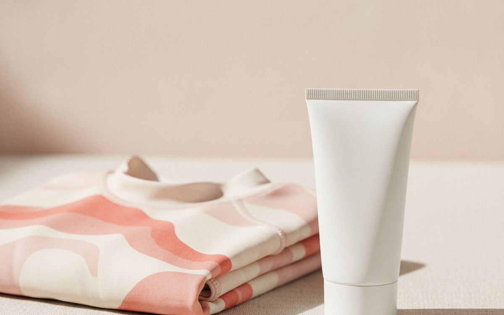
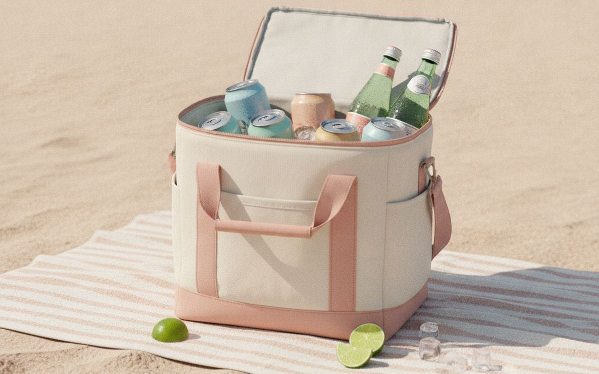
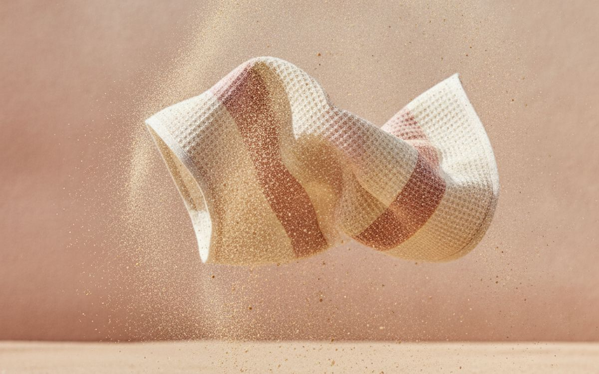
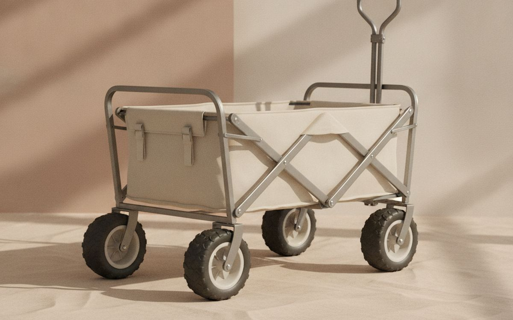
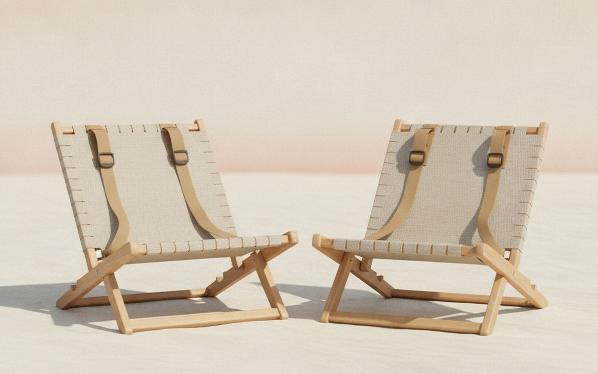
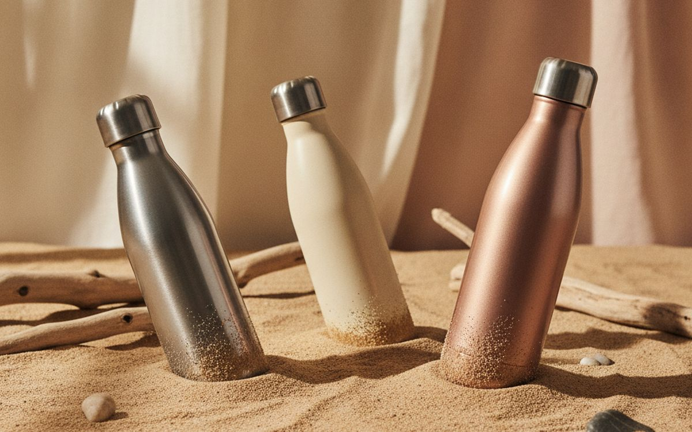
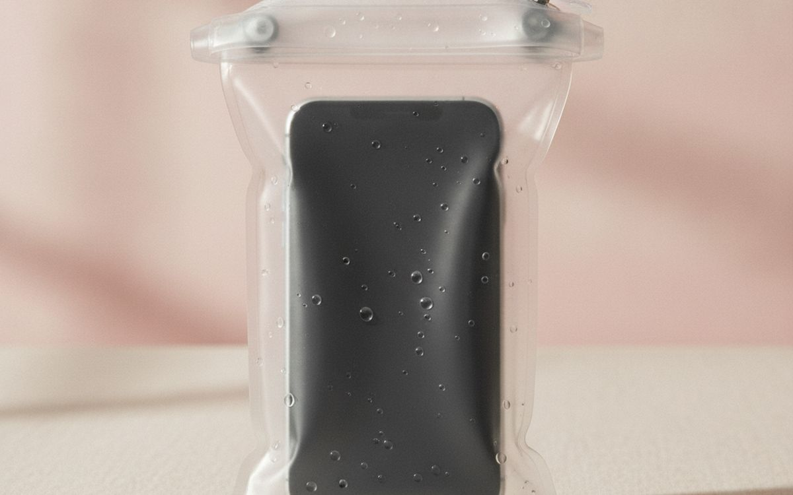
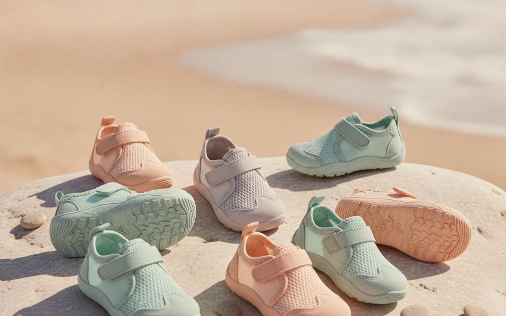
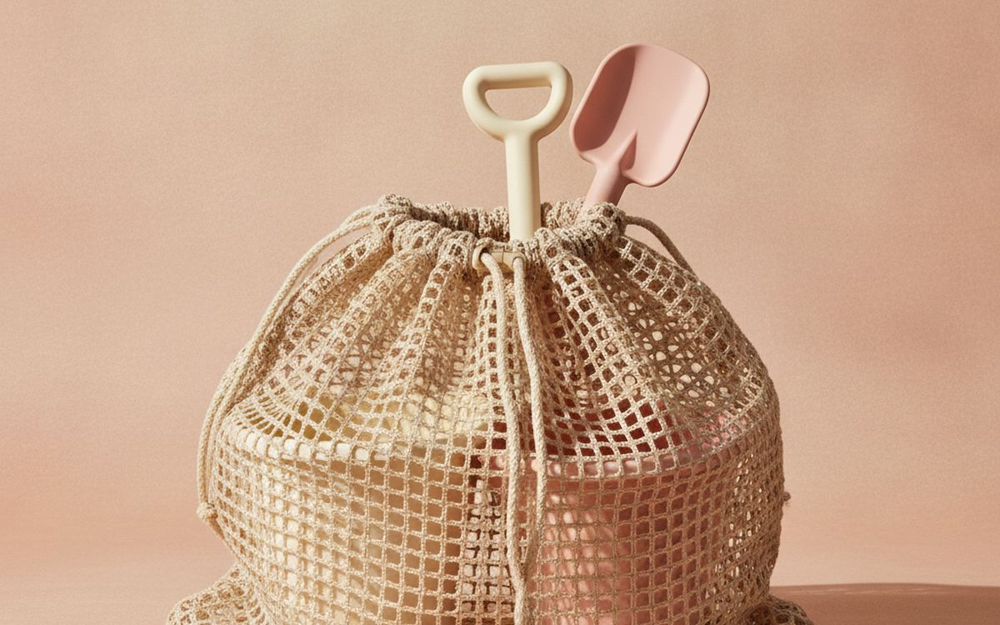

A beach day sounds simple until you are carrying everything from the car park across hot sand, the umbrella flips inside out in the first gust, and the kids are sunburnt by lunch. Beach kit fails in the wind, in the heat and on the walk. Cheap umbrellas and flimsy chairs make up a lot of what gets left in beach bins at the end of summer.
This list is ordered by what makes the day last: shade, water and protection first, then comfort and carrying. Buy for the wind at your beach; that decides more than anything.
Prices below are approximate street prices at the time of writing and move around constantly, especially during sale events. Treat them as a rough band for budgeting, not a quote. Always check the live listing before you buy.
Με λίγα λόγια
A sand-anchored beach shade or sun shelter
Shade that stays put
Γνωστοποίηση. Οι σύνδεσμοι σε αυτή τη σελίδα είναι συνδεδεμένοι. Αν αγοράσετε μέσω κάποιου, ενδέχεται να λάβουμε προμήθεια χωρίς επιπλέον κόστος για εσάς. Δεν επηρεάζει το τι μπαίνει στη λίστα ούτε τη σειρά της.
Πώς επιλέξαμε
These picks come from published testing, dermatologist sun safety guidance, beachgoer communities and long-run owner reports, cross-checked against current retail listings. We have not personally tested every item here. We favoured gear that holds up in wind and packs easily.
Με μια ματιά
Οι τιμές είναι ενδεικτικές κατά τη συγγραφή και αλλάζουν συχνά.
Οι επιλογές
01 · Shade that stays putA sand-anchored beach shade or sun shelter
Cheap umbrellas flip in wind. Fabric shades that anchor with sandbags, such as the Shibumi-style designs, or pop-up sun shelters with sand pockets hold much better and give more shade. Look for UPF 50 fabric and a design that works with the wind at your usual beach. Practise setting it up at home first. The case for it: reliable shade all day, holds in wind better than umbrellas, and uPF-rated fabric. The trade-off is real: some need steady wind to stay up and pop-up shelters can be hard to fold, so weigh that against how often it would actually get used.
$50-150Ο συμβιβασμός: Some need steady wind to stay up
Γιατί είναι εδώ
- Reliable shade all day
- Holds in wind better than umbrellas
- UPF-rated fabric
Αξίζει να ξέρετε
- Some need steady wind to stay up
- Pop-up shelters can be hard to fold

02 · Sun protectionMineral sunscreen and a UV rash guard
Sunburn is the most common beach injury. Use broad-spectrum SPF 30 or higher, reapply every two hours and after swimming. Mineral sunscreens with zinc or titanium are gentle on children's skin. A UPF rash guard protects shoulders and backs without reapplying, which helps a lot with kids. Check local rules; some beaches ban certain sunscreen ingredients. The case for it: prevents sunburn, rash guards need no reapplying, and suitable for kids. The trade-off is real: mineral sunscreen can leave a white cast and must reapply after swimming, so weigh that against how often it would actually get used.
$15-40Ο συμβιβασμός: Mineral sunscreen can leave a white cast
Γιατί είναι εδώ
- Prevents sunburn
- Rash guards need no reapplying
- Suitable for kids
Αξίζει να ξέρετε
- Mineral sunscreen can leave a white cast
- Must reapply after swimming

03 · Cold drinks all dayA soft cooler or insulated cooler bag
A soft cooler with thick insulation keeps drinks and food cold for a day and carries more comfortably than a hard box. Look for a leakproof lining and a shoulder strap. Freeze water bottles to use as ice packs, and drink them as they melt. The case for it: keeps food safe and drinks cold, easy to carry, and folds when empty. The trade-off is real: less ice retention than hard coolers and cheap zips leak, so weigh that against how often it would actually get used. Priced around $30-80, it is easy to justify even if it only ends up getting occasional rather than daily use.
$30-80Ο συμβιβασμός: Less ice retention than hard coolers
Γιατί είναι εδώ
- Keeps food safe and drinks cold
- Easy to carry
- Folds when empty
Αξίζει να ξέρετε
- Less ice retention than hard coolers
- Cheap zips leak

04 · Towels that shake cleanSand-free microfibre beach towels
Thick cotton towels hold sand and water and stay wet. Microfibre sand-free towels shake clean, dry fast and pack small. They are thinner, so bring one per person to sit on and one to dry off if you like more comfort. The case for it: sand shakes off easily, dry fast, and pack small. The trade-off is real: feel thinner than cotton and can pick up lint in the wash, so weigh that against how often it would actually get used. At $20-40, it earns its place on this list without asking for a big up-front commitment either way.
$20-40Ο συμβιβασμός: Feel thinner than cotton
Γιατί είναι εδώ
- Sand shakes off easily
- Dry fast
- Pack small
Αξίζει να ξέρετε
- Feel thinner than cotton
- Can pick up lint in the wash

05 · Carrying everything across sandA beach wagon with wide wheels
For families, the walk to the sand is the hardest part. A folding wagon with wide, balloon-style wheels rolls on soft sand where normal wheels sink. It carries the cooler, chairs, shade and toys in one trip. Check the wheel width; narrow wheels are useless on soft beaches. The case for it: one trip from the car, wide wheels work on sand, and folds for storage. The trade-off is real: bulky in the car and narrow wheels sink in soft sand, so weigh that against how often it would actually get used.
$70-150Ο συμβιβασμός: Bulky in the car
Γιατί είναι εδώ
- One trip from the car
- Wide wheels work on sand
- Folds for storage
Αξίζει να ξέρετε
- Bulky in the car
- Narrow wheels sink in soft sand

06 · Comfortable seatingLow backpack beach chairs
Low chairs are steadier in sand and let you sit near the water. Backpack straps free your hands for other gear. Look for rust-resistant aluminium frames and a pocket or cup holder. Rinse after use; salt corrodes joints. The case for it: comfortable for hours, carry on your back, and steady on sand. The trade-off is real: low seats are harder to get out of and rinse to prevent rust, so weigh that against how often it would actually get used. Priced around $30-60 each, it is easy to justify even if it only ends up getting occasional rather than daily use.
$30-60 eachΟ συμβιβασμός: Low seats are harder to get out of
Γιατί είναι εδώ
- Comfortable for hours
- Carry on your back
- Steady on sand
Αξίζει να ξέρετε
- Low seats are harder to get out of
- Rinse to prevent rust

07 · Cold water in the heatInsulated water bottles
Hot sun, salt water and physical activity dehydrate people fast. Insulated steel bottles keep water cold all day, even in direct sun. One per person saves arguments. Refill from the cooler. The case for it: cold water all day, reduces plastic waste, and durable. The trade-off is real: heavier than plastic bottles and sand gets into the lid threads, so weigh that against how often it would actually get used. At $20-35, it earns its place on this list without asking for a big up-front commitment either way. As with anything on this list, check the exact listing details and current price before adding it to a cart.
$20-35Ο συμβιβασμός: Heavier than plastic bottles
Γιατί είναι εδώ
- Cold water all day
- Reduces plastic waste
- Durable
Αξίζει να ξέρετε
- Heavier than plastic bottles
- Sand gets into the lid threads

08 · Phones near waterA waterproof phone pouch
Sand and water kill phones. A clear waterproof pouch keeps the phone usable for photos and messages while protecting it from splashes and sand. Test it with a tissue inside before trusting it with your phone. Some float, which is useful on boats. The case for it: protects from sand and water, cheap, and still lets you take photos. The trade-off is real: touchscreens are harder to use through plastic and test for leaks first, so weigh that against how often it would actually get used. For $8-15, it is a small, low-risk addition to the list rather than a centrepiece purchase you need to think hard about.
$8-15Ο συμβιβασμός: Touchscreens are harder to use through plastic
Γιατί είναι εδώ
- Protects from sand and water
- Cheap
- Still lets you take photos
Αξίζει να ξέρετε
- Touchscreens are harder to use through plastic
- Test for leaks first

09 · Hot sand and rocksWater shoes
Midday sand can burn feet, and rocky beaches, shells and sea urchins hurt. Quick-dry water shoes protect feet in and out of the water. Kids especially benefit. They also work for river walks and pool decks. The case for it: protects from hot sand and rocks, quick drying, and great for kids. The trade-off is real: sand gets inside and sizing runs small from some sellers, so weigh that against how often it would actually get used. Priced around $15-30, it is easy to justify even if it only ends up getting occasional rather than daily use.
$15-30Ο συμβιβασμός: Sand gets inside
Γιατί είναι εδώ
- Protects from hot sand and rocks
- Quick drying
- Great for kids
Αξίζει να ξέρετε
- Sand gets inside
- Sizing runs small from some sellers

10 · Kids' spades and bucketsMesh beach toy bag
Sand toys bring half the beach home. A mesh bag lets you shake and rinse toys and leave the sand behind. Large ones double as a laundry bag for wet towels. The case for it: leaves the sand at the beach, easy to rinse, and cheap. The trade-off is real: small items slip through large mesh and mesh can tear on sharp toys, so weigh that against how often it would actually get used. At $10-20, it earns its place on this list without asking for a big up-front commitment either way.
$10-20Ο συμβιβασμός: Small items slip through large mesh
Γιατί είναι εδώ
- Leaves the sand at the beach
- Easy to rinse
- Cheap
Αξίζει να ξέρετε
- Small items slip through large mesh
- Mesh can tear on sharp toys
Συχνές ερωτήσεις
What is the best beach shade for windy beaches?
Sandbag-anchored fabric shades or pop-up shelters hold better than umbrellas. Anchor them well.
How often should I reapply sunscreen?
Every two hours and after swimming or towelling off.
How do I keep food cold at the beach?
A well-insulated cooler, frozen water bottles as ice packs, and keeping it in the shade.
Do sand-free towels really work?
Mostly, yes. Sand shakes off far more easily than from cotton.
Οι προσφορές σήμερα
Δείτε τι είναι σε έκπτωση αυτή τη στιγμή.
Προσφορές →← Όλοι οι οδηγοί
Ως συνεργάτες της AliExpress, κερδίζουμε από επιλέξιμες αγορές. Οι τιμές και η διαθεσιμότητα ισχύουν κατά την ημερομηνία δημοσίευσης και ενδέχεται να αλλάξουν.